BlogNovember 26, 2026Deep research · Benchmark13 min read
DRBench Pro: A Knowledge-Centric Benchmark for Professional Deep Research Agents
Two research reports can satisfy the same number of rubrics and still be very different reports: one wide and shallow, the other narrow and deep. DRBench Pro keeps the structure of the knowledge when it scores a report, so breadth and depth can be measured separately.

Contents
TL;DR
Give a deep research agent an open question and it plans, searches, reads and writes a long report. To judge the report, we have to ask what it covered. Most benchmarks answer with a list of rubrics and a count of how many the report satisfies. A count cannot tell a report that touches every direction lightly from one that follows a few directions all the way down.
DRBench Pro keeps that structure. Each case is built from a knowledge tree grown out of a Wikipedia article. The children of the root are research directions; the paths below them, up to three hops, are chains of related knowledge. Every edge of the tree becomes one rubric grounded in Wikipedia evidence. The agent receives only a research question written from the same tree; the tree and its rubrics stay hidden. A judge checks each rubric against the report, and the verdicts are combined from the leaves up into breadth, how fully the directions are covered, and depth, how far the chains are followed. Overall coverage is their geometric mean.
On 144 cases across 24 domains (44,102 rubrics), the best of 16 agents, Claude Opus 5, reaches 57.04% overall coverage. Breadth and depth rank the agents differently, and the same model changes its profile when the research workflow around it changes.
Overall coverage, all 144 cases
Even the best covers just over half
Qwen3.8 Max, breadth
Same model, different workflow, different profile
Retrieved knowledge that reaches the report, mean of seven backbones
Deeper knowledge is dropped more often
Agreement with expert rankings (Kendall τb, overall)
Structure brings scores closer to experts
1A count hides the shape
Deep research questions are open-ended. Many different reports can answer one well, and no single reference answer holds everything relevant. Fact-checking tells us whether what a report says is supported; it cannot tell us what the report left out. Benchmarks therefore write down the expected content, from expert reports, reference facts or rubrics, and check the report against it. Coverage is then usually one score among several, next to writing, citation and formatting, and the rubrics are added up flat: every satisfied item counts the same.
Adding them up flat throws away how the items relate. Take three reports on the same question that each satisfy the same number of rubrics. The first states the opening fact of every direction and stops there. The second follows two directions down to their deepest facts and ignores the rest. The third picks up scattered details deep in the tree without the links that connect them. They read differently and serve different readers, yet a count gives all three the same score. Figure 2 lets you build such reports and watch what happens.
DRBench Pro makes structured knowledge coverage the main thing it measures. That takes three parts: a reference space whose structure is known, rubrics that each sit at a known position in it, and a metric that uses those positions.
2From a Wikipedia tree to hidden rubrics
Figure 1 walks through one case from the paper. The root is the Wikipedia article Roguelike; the figure follows 12 of the rubrics in two of its ten directions, with the judge’s actual verdicts on a report written by o3 Deep Research.
Build a local knowledge tree
RootW Roguelike Games domain
ExpandFollow Wikipedia links breadth-first; each edge is a relation stated in the source article.
- Hop 150 children of the root
- Hop 2up to 5 children per node
- Hop 3stop; about 1.5K nodes per tree
SampleA case keeps the root and 10 complete branches that fit one research task. This one keeps Dungeons & Dragons, Rogue, ASCII, Colossal Cave Adventure and six more. We follow two of them.
One subgraph, one question, many rubrics
- Early Inspirations: D&D and the First Digital Dungeon Crawls
- Text-Only Technology and ASCII Art Dungeons
- Procedural Generation, Challenge, and “Perma-Death”
- The Birth of Rogue and its Founding Developers
- Parallel Evolution: Early Roguelike Variants …
Judge each rubric, then aggregate up the tree
Two misses, two different costs. Missing R6 leaves Hack with no deeper chain; missing R12 stops the Beneath Apple Manor chain one hop short.
Growing the tree
The 24 domains are the topic categories of WebOrganizer, and each has two root entities, such as Xerox Alto and Cray-1 for hardware or Ignaz Semmelweis and John Snow for health. From each root, Wikipedia links are expanded breadth-first. Nodes are entities, and an edge is a relationship supported by a link anchor and the text around it. The expansion is kept as a rooted tree, so every node has one parent and every relation has one position. It stops at three hops, keeping 50 children of the root and at most five children of every other node; Claude Opus 4.8 picks them for relevance and research value. The 48 trees have about 1.5K nodes each.
Sampling a research scope
A whole tree is more than one research request can reasonably ask for. A branch, one child of the root with all its descendants, is a research direction. Each case keeps the root and 10 complete branches that together give complementary angles on one research task, and each root yields three cases with no shared branches. That gives 144 cases. We first built 720 cases and evaluated three deep research systems on them. Keeping two roots per domain left 96.7% of the sampled scores within two points of the full pool, and kept the systems’ order in all 20 samples, so the benchmark uses two roots per domain.
One query, many hidden rubrics
The query and the rubrics come from the same subgraph. The query is a natural research request about the root and the broader themes of the sampled branches; the prompt discourages listing the hidden entities, so the agent has to investigate a topic rather than fill in an outline. Then every retained edge becomes one rubric, asking whether the report covers the relationship between its two entities. The rubric is written only from the supplied evidence: the two pages’ summaries, the anchor sentence, the relevant paragraphs and the backlink context. A case has 236 to 310 rubrics, 306 on average, and 80.45% of them sit at the third hop.
To score a report, a judge (Gemini 2.5 Pro) gives each rubric one of three verdicts: Satisfied, Partially Satisfied or Not Satisfied. Only Satisfied counts as covered. Section 7 explains why the scores use this binary mapping.
3Breadth and depth
Both metrics are computed from the leaves up. Each relation v has a verdict x(v) of 1 (covered) or 0, and a leaf starts with B = D = x.
Breadth asks how fully the directions are covered. At an inner node, it mixes the relation’s own verdict with the mean breadth of its children:
B(v) = β·x(v) + (1 − β)·mean B(children), with β = 0.6.
Covering a relation alone therefore does not earn full credit for everything below it, while covered descendants partly make up for a missing relation above them. Case breadth is the plain mean over the ten directions, so a direction with more rubrics does not count for more.
Depth asks how far chains are followed. The children’s depth values are sorted, and the best one gets the most weight: weights fall by a factor ρ = 0.5 per rank and are normalized, giving d(v). Then
D(v) = α·x(v) + (1 − α)·d(v)·[η + (1 − η)·x(v)], with α = 0.25 and η = 0.75.
The bracket rewards continuity. If the relation linking a node to its parent is covered, the evidence below it counts in full; if it is missing, that evidence is multiplied by 0.75, discounted but not thrown away. Case depth applies the same rank weighting across the ten directions. Overall coverage is √(B·D) for each case, so a weak score in either dimension pulls it down. The three metrics are then averaged over cases separately.
4Sixteen agents
We evaluate 16 agents in three groups, distinguished by who provides search and research orchestration.
- Deep research systems, built for long, autonomous investigations: o3 Deep Research, Perplexity Sonar Deep Research and Qwen Deep Research.
- Native search LLMs, which call the provider’s own web search during generation: Claude Opus 5, Grok 4.5, GPT-5.6 Sol, Gemini 3.1 Pro Preview, Sonar Reasoning Pro and Qwen3.8 Max.
- Backbone LLMs in a local research framework: the same fixed Wikipedia snapshot, the same Search and Open tools, the same workflow and the same budget, with provider search turned off (Section 6). Seven backbones: Qwen3.8 Max, MiniMax M3, GLM 5.2, DeepSeek V4 Flash, DeepSeek V4 Pro, Qwen3.7 Plus and Gemma 4 31B.
Claude Opus 5 is first on all three metrics: 57.04% overall, 53.09% breadth and 61.91% depth. Grok 4.5 is second overall (50.98%) and second in breadth, but fifth in depth; o3 Deep Research is third overall and second in depth. Everyone else interleaves. Perplexity Sonar Deep Research is third in depth and eleventh in breadth. Even the best agent leaves more than 40% of the expected knowledge uncovered.
The workflow around a model matters as much as the model. Qwen3.8 Max in the local research framework scores 15.54 points higher in breadth and 6.28 points higher in depth than the same model with its native search. The framework makes it plan three research units and check for gaps, and most of the gain is in breadth. Within the Perplexity family, the deep research product beats Sonar Reasoning Pro in depth (54.08 vs. 50.24) and is slightly behind it in breadth (40.00 vs. 40.86). Among the backbones that share the local framework, breadth scores at the top are already close, and depth separates them.
Same score, different reports
Aggregates hide the most at the level of a single case. On the case about the British media mogul Lew Grade, Perplexity Sonar Deep Research and Grok 4.5 get almost the same overall coverage, 38.83% and 40.31%, with mirrored profiles: Perplexity follows a few chains far (breadth 27.33%, depth 55.19%), while Grok touches most directions but stays shallow (breadth 54.48%, depth 29.82%). On the temperance movement, o3 Deep Research and GPT-5.6 Sol agree even on breadth and depth (32.11 vs. 34.64, 48.26 vs. 50.43), yet at the level of single directions their reports go down different chains of the same tree.
5Across 24 domains
Coverage also depends on the subject. Averaged over agents, it is highest in Software Development (53.69%), Science & Technology (52.36%) and Health (50.10%), and lowest in Industrial (28.58%) and Food & Dining (35.45%). Claude Opus 5 leads in 23 of the 24 domains; the exception is Literature, where o3 Deep Research leads with 53.2% against 49.6%.
6From retrieval to report
Comparing products tells us which one covers more, but not why. For a controlled comparison, the local research framework fixes everything except the backbone model. Retrieval runs offline over one English Wikipedia snapshot (enwiki-20260701-v1) through two tools, Search and Open. The model splits the query into three research units that gather evidence in parallel, runs one coverage-gap check that may launch one extra gap unit, and writes the report. The search budget and the workflow are the same for every backbone, and so is the evidence space, which does not drift over time. That leaves planning, tool use, evidence selection and writing to the model, and every trajectory can be audited.
Across the 1,008 trajectories (144 cases × 7 backbones), the number of searches hardly varies, about 10 to 12 per case. Pages read, citations and report length vary a lot, and launching the extra gap unit is only weakly tied to coverage. More activity does not buy more coverage either. On a Horn & Hardart case, GLM 5.2 searches more, opens more pages, reads 112 unique pages to DeepSeek V4 Flash’s 43, uses twice the tokens and writes a longer report, and still covers less on all three metrics.
The same metric can also score what an agent retrieved, not just what it wrote. On 24 cases, we score each backbone’s retrieved material and its final report separately. Of the rubric instances fully covered in the retrieved material, 47.0% are no longer fully covered in the report, and the deeper the knowledge, the more likely it is to be dropped. Models drop different things: DeepSeek V4 Pro keeps more of its depth than its breadth (92.4% vs. 80.4%), DeepSeek V4 Flash the reverse (80.7% vs. 89.9%), and Qwen3.8 Max keeps the most of both, retaining 65.6% of the knowledge it found.
These differences are not just a matter of length. When all seven backbones are asked for about 1,200 words, the gaps remain: Qwen3.8 Max and DeepSeek V4 Pro write almost the same length (1,198 and 1,239 words) and still differ by 5.24 points. The harness matters too. LangChain’s Open Deep Research, run with DeepSeek V4 Flash and a much larger search budget, reaches 57.11% overall coverage on a 24-case subset, against 45.43% for the same backbone in our local framework.
7Can the scores be trusted?
Every number above rests on a judge model reading long reports against hundreds of rubrics, and on a metric with four parameters. We checked both, along with the tasks themselves.
Judge against humans. On 3,695 rubric judgments from 12 reports, one per domain, we compare three judges with human-reviewed labels. Collapsing the verdicts to covered or not covered gives higher Macro-F1 than keeping three levels, for all three judges. Gemini 2.5 Pro agrees best (0.893 binary), so it is the judge, with its three-level outputs mapped to binary coverage.
Metric against experts. Three experts independently rated 72 reports (six agents on 12 cases) for breadth, depth and overall quality. Holding the judge’s verdicts fixed, the structured metrics rank the reports within each case closer to the experts than flat or level-balanced coverage does (Kendall τb 0.751 vs. 0.508 for overall). Removing descendant fusion from breadth or the continuity discount from depth lowers agreement.
Rankings against parameter choices. Moving each of β, α, η and ρ up and down changes the agent rankings very little: Spearman correlations with the default stay at least 0.997 for breadth and 0.976 for depth. Depth is most sensitive to α, which causes at most two practical reversals among 120 agent pairs.
The tasks hold up as well. We read all 144 queries: every one is worth a research report and answerable from public sources, and 141 fit their assigned domain cleanly (the other three overlap neighbouring domains). Checking 7,385 query–entity pairs from 24 cases for hidden entities named in the query found 8 leaks (0.108%), none of them at the first hop. Rebuilding 10 cases with a different construction model (Kimi K2.6 instead of Claude Opus 4.8) lowers all scores but keeps Claude Opus 5 first, with a smaller lead.
8Evaluate your own agent
The benchmark, judge prompts, evaluator and metrics are released, and the bundled framework is optional. Give each query in queries.jsonl to your agent and save one report per case. Then:
pip install -e .
drbenchpro validate-reports --cases data/benchmark/cases.jsonl --reports my-reports.jsonl --require-full
drbenchpro evaluate --cases data/benchmark/cases.jsonl --reports my-reports.jsonl --output out/
drbenchpro metrics --cases data/benchmark/cases.jsonl --scores out/scores.jsonl --output out/metrics.jsonKeep cases.jsonl, which holds the rubrics and the reference trees, away from the agent writing the reports. The paper’s judge is Gemini 2.5 Pro; any OpenAI-compatible endpoint works, but keep the judge fixed when comparing systems. The local research framework is also released as a Docker image with the fixed Wikipedia index, for testing backbones under the controlled setting.
- Measure where a report covers, not just how much. Breadth and depth rank the 16 agents differently, and single cases with near-identical scores can hide opposite strategies.
- The workflow shapes the profile. The same model gains 15.54 breadth points when a research workflow plans and checks for gaps around it.
- Finding is not reporting. Nearly half of the knowledge an agent fully retrieves does not survive into its report, and deeper knowledge is lost most.
Citation
@article{huang2026drbenchpro,
title = {DRBench Pro: A Knowledge-Centric Benchmark for Professional Deep Research Agents},
author = {Huang, Han and Yan, Yuchen and Wu, Xingyu and Li, Yijun and Deng, Chao and Liu, Jie and Ma, Jin and Shen, Yongliang},
journal = {arXiv preprint arXiv:},
year = {2026}
}References
- Du et al. (2026). DeepResearch Bench: A Comprehensive Benchmark for Deep Research Agents. ICLR.
- Li et al. (2026). DeepResearch Bench II: Diagnosing Deep Research Agents via Rubrics from Expert Report.
- Sharma et al. (2026). ResearchRubrics: A Benchmark of Prompts and Rubrics for Evaluating Deep Research Agents. ICLR.
- Min et al. (2023). FActScore: Fine-grained Atomic Evaluation of Factual Precision in Long Form Text Generation. EMNLP.
- Wettig et al. (2025). Organize the Web: Constructing Domains Enhances Pre-Training Data Curation.
The case studies, trajectory statistics, cost accounting and every prompt are in the paper’s appendix; the benchmark, evaluator and framework are on GitHub and Hugging Face, and the leaderboard is on the project page.